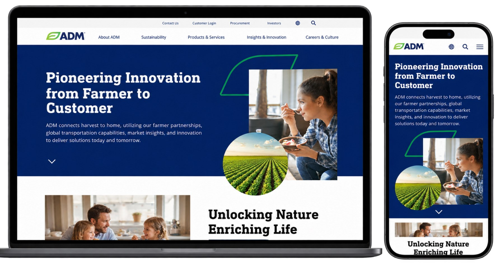
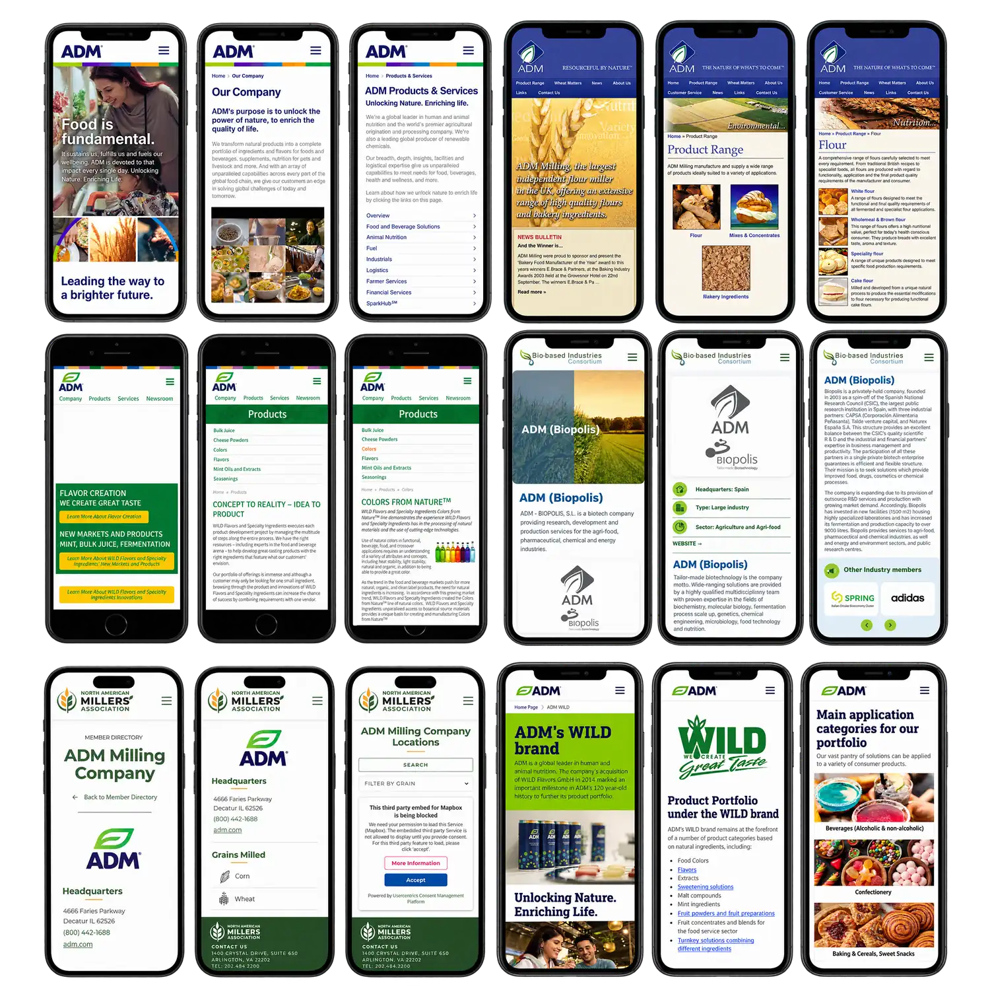
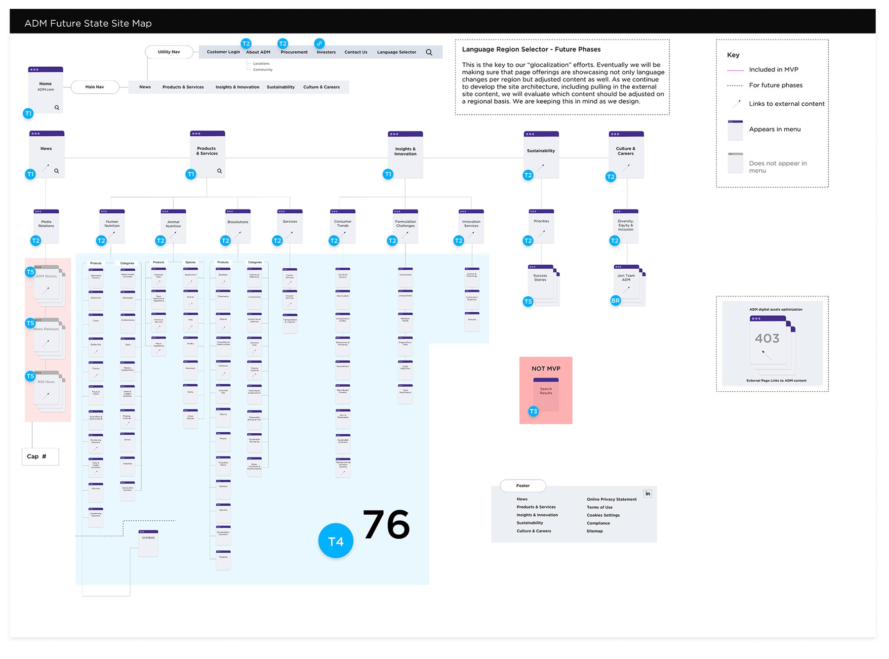
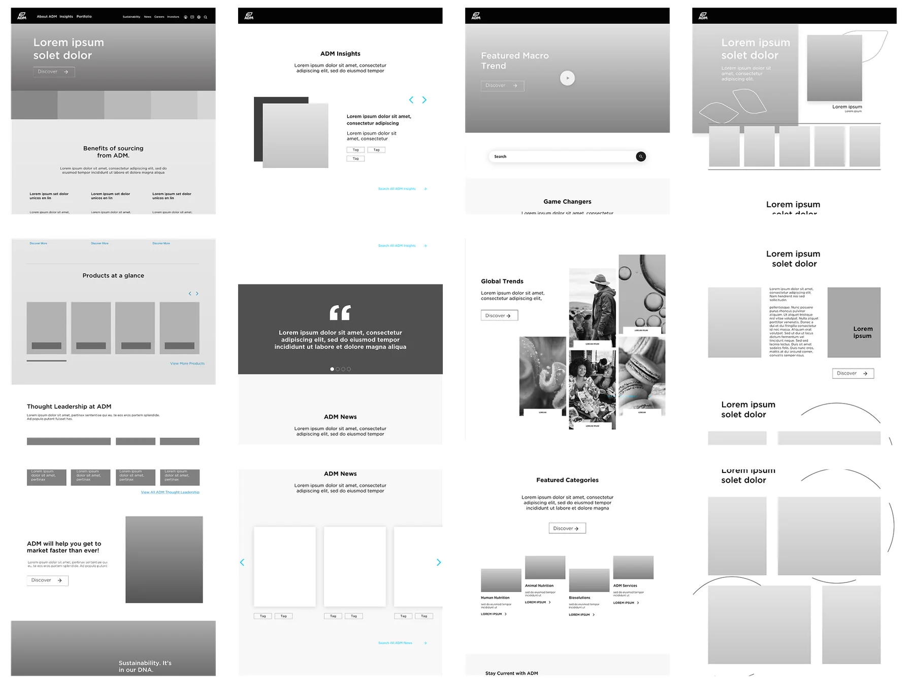
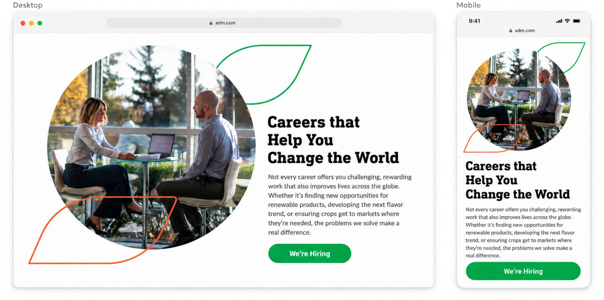
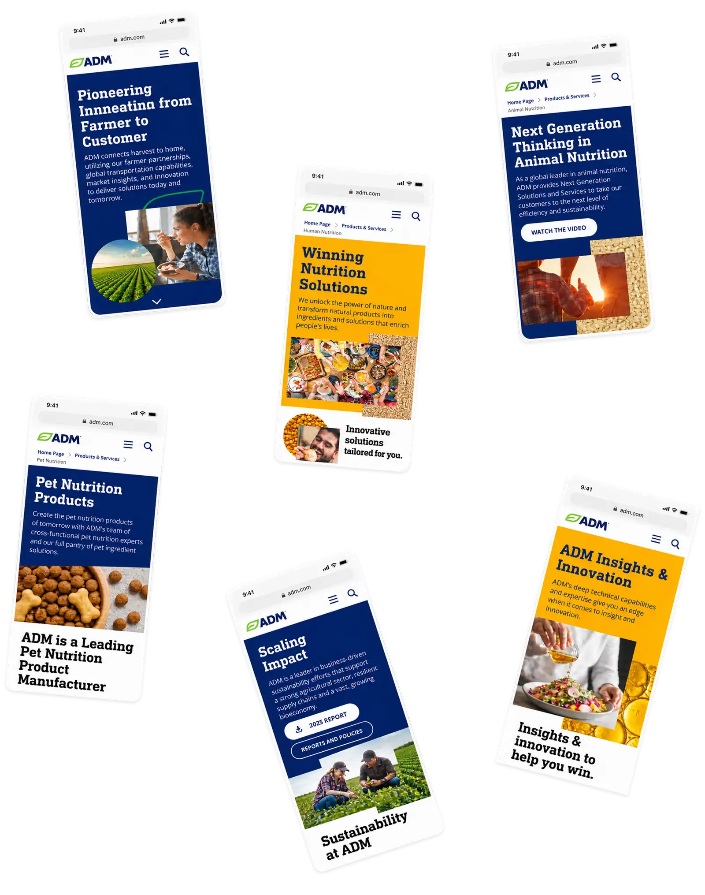

ADM
One company, two hundred countries.

Overview
A global food and nutrition business whose digital estate had grown faster than any structure could hold. We audited it, restructured it, and built the system to keep it coherent.
The challenge
Scale had become the problem.
Years of independent growth created fragmented content, competing navigation, and sprawling child pages. We built a unified strategy to bring every market into one cohesive experience.

One Major Opportunity
A content model that survives translation. We needed to reimagine the entire sitemap. The new structure gave every market a shared foundation while preserving local relevance.

Architecture
With a content strategy and site structure built to bring child brands together, we moved into wireframing, using atomic design to define the new site’s building blocks.

The outcome
All of this work culminated in a beautifully redesigned site that brought ADM’s complex digital ecosystem into one unified marketing platform.


Next project
Under Armour
What could a store do for an athlete?